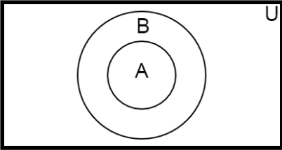
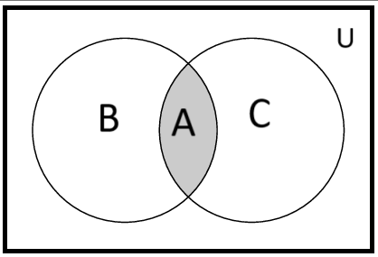
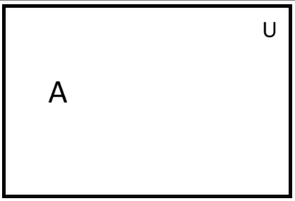
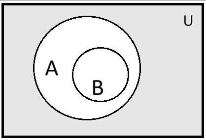
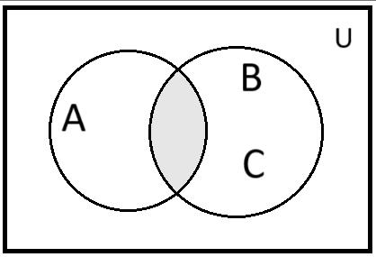

Mathematics
Discrete Mathematics -
It is the part of mathematics devoted to the study of discrete (distinct or unconnected) object.
Here are some problem solved using discrete mathematics-
- How many ways are there to choose a valid password on a computer system.
- How can I identify spam email messages.
- How can I encrypt a message so that no unintended recipient can read it?
- How can it will prove that a sorting algorithm correctly sort a list.
- How many valid internet address are there.
Application of Discrete Mathematics -
It provides mathematical foundation for many computer science course including data structures, algoric,
database theory, autometa theory, formal language compiler theory, computer security and operating system.
Venn-Diagram
A Venn-Diagram is a pictorial representation of sets in which sets are represented by inclose areas in the plane.
The universal set U represented by the interior of a rectangle.
eg-

(A⊆B)

(A⋂B)

(A and B are disjoint)
Q. Let A and B be sets such that (A⋂B)⊆B and B∈A. Draw Venn-Diagram.
sol-
Q. Let A,B and C be sets such that (B⋂C)⊆A and A⊆(B⋂C). Draw Venn-Diagram.
sol-

Q. Ac⋂U = ∅ . Draw Venn-Diagram.
sol-

Q. (A⋂B)c = Bc . Draw Venn-Diagram.
sol-

Q. Ac⋂B = Ac⋂C and A⋂B = A⋂C . Draw Venn-Diagram.
sol-

cardinlity of set -
Let, S be a set if there are exactly a distinct element in S where n is not negative integer then S is a
finite ser and n is the cardinlity of S denoted by
|S| = n
eq-
1. Let S be the set of english alphabet.
sol- |S| = 26
2.Let S be the empty set
sol- |∅| =0
Infinite set -
A set is said to be infinite, if it is not finite.
eq- set of positive integer.
Power set-
Given a set S, the power set of S is the set of all subset of the set S.
eg- let A={0,1,2}
⇒P(A) = {∅,{0},{1},{2},{0,1},{0,2},{1,2},{0,1,2}}
⇒P(A) = 2n=23=8
Cartesian Product -
Let A and B be set, the Cartesian product of A and B denoted by AxB, if the set of all order pairs (a,b),
where a∈A and b∈B.
Hence, AxB = {(a,b)|a∈A ∧ b∈B}.
The ordered n-tuple (a1,a2,......an) is the ordered collection that has
a1 as its first element, a2 as its second element,.........an as its nth
element.
(a1,a2,......an) = (b1,b2,......bn)
if ai = bi for i = 1,2,3,.....n .
eg - The Cartesian product of A = {1,2}, B = {a,b,c}
Then, AxB = {(1,a),(1,b,(1,c),(2,a),(2,b),(2,c))}
BxA = {(a,1),(a,2),(b,1),(b,2),(c,1),(c,2)}
Union of two set A and B -
Let, A and B be sets
∴ A⋃B = {x | x∈A ∨ x∈B}
Intersection of sets -
Let, A and B be sets
∴ A⋂B = {x | x∈A ∧ x∈B}
Difference of two sets -
Let, A and B be sets
∴ A-B = {x | x∈A ∧ x∉B}
Complement of sets -
Let, A and B be sets
∴ Ac = {x | x∉A}
Q. Convert Roster to set builder form.
A = {0,3,6,9,12}
sol- A = {x | x=3n, n=0,1,2,3,4}
Q. Convert set builder to Roster
A = {x | x is an integer such that x2=2}
sol- A = {∅}
Set Identities -
- Identity law -
i. A⋃∅ = A
ii. A⋂U = A
- Dominartion law -
i. A⋃U = U
ii. A⋂∅ = ∅
- Idempotent law -
i. A⋃A = A
ii. A⋂A = A
- Double Complement law -
i. (Ac)c = A
- Commutative law -
i. A⋃B =B⋃A
ii. A⋂B = B⋂A
- Associative law -
i. A⋃(B⋃C) = (A⋃B)⋃C
ii. A⋂(B⋂C) = (A⋂B)⋂C
- Distributive law -
i. A⋃(B⋂C) = (A⋃B)⋂(A⋃B)
ii. A⋂(B⋃C) = (A⋂B)⋃(A⋂C)
- De-Morgans law-
i. (A⋃B)c = Ac⋂Bc
ii. (A⋂B)c = Ac⋃Bc
- Absorption law -
i. A⋃(A⋂B) = A
ii. A⋂(A⋃B) = A
- Complement law -
i. A⋃Ac = U
ii. A⋂Ac = ∅
Q. Use set builder notation and logical equivalent to establish the first De-Morgans law.
sol-
⇒ (A⋂B)c = {x | x∉(A⋂B)}
⇒ (A⋂B)c = {x | ¬(x∈(A⋂B))}
⇒ (A⋂B)c = {x | ¬(x∈(A ∧ B))}
⇒ (A⋂B)c = {x | ¬(x∈A ∧ x∈B) }
⇒ (A⋂B)c = {x | ¬(x∈A) ∨ ¬(x∈B)}
⇒ (A⋂B)c = {x | x∉A ∨ x∉B}
⇒ (A⋂B)c = {x | x∈Ac ∨ x∈Bc)}
⇒ (A⋂B)c = {x | x∈(Ac ⋃Bc )}
⇒ ∴ (A⋂B)c = Ac⋃Bc
Q. Use set builder notation and logical equivalent to establish the second De-Morgans law.
sol-
⇒ (A⋃B)c = {x | x∉(A⋃B)}
⇒ (A⋃B)c = {x | ¬(x∈(A⋃B))}
⇒ (A⋃B)c = {x | ¬(x∈(A ∨ B))}
⇒ (A⋃B)c = {x | ¬(x∈A ∨ x∈B) }
⇒ (A⋃B)c = {x | ¬(x∈A) ∧ ¬(x∈B)}
⇒ (A⋃B)c = {x | x∉A ∧ x∉B}
⇒ (A⋃B)c = {x | x∈Ac ∧ x∈Bc)}
⇒ (A⋃B)c = {x | x∈(Ac ⋂Bc )}
⇒ ∴ (A⋃B)c = Ac⋂Bc
Q. Let A,B and C be sets. Show that A⋃(B⋂C)c
= ((C)c⋃(B)c)⋂(A)c
sol-
A⋃(B⋂C)c
= (A)c⋂(B⋂C)c [by De-morgans law]
A⋃(B⋂C)c
= (B⋂C)c⋂(A)c [by Commutative law]
A⋃(B⋂C)c
= ((B)c⋃(C)c)⋂(A)c [by De-morgans law]
A⋃(B⋂C)c
= ((C)c⋃(B)c)⋂(A)c [by Commutative law]
The Inclusion-Exclusion principles -
Let, A and B be any finite sets.
Then, n(A⋃B) = n(A) + n(B) - n(A⋂B)
also, n(A⋃B⋃C) = n(A) + n(B) + n(C) - n(A⋂B) - n(A⋂C) - n(B⋂C) + n(A⋂B⋂C)
Eg-
Find the number of student at a college taking alteast one of the languages French, German and Russian given the following data. Total number of
student taking is 120. 65 study French, 45 study German, 42 study Russian, 20 study French and German, 25 study French and Russian, 15 study German and Russian,
8 study all three language. Draw Venn-Diagram using result.
sol-
Given, n(F) = 65
n(G) = 45
n(R) = 42
n(F⋂G) = 20
n(F⋂R) = 25
n(G⋂G) = 15
n(F⋂G⋂R) = 8
∴ n(A⋃B⋃C) = n(A) + n(B) + n(C) - n(A⋂B) - n(A⋂C) - n(B⋂C) + n(A⋂B⋂C)
n(A⋃B⋃C) = 65 + 45 + 42 - 20 - 25 - 15 + 8
n(A⋃B⋃C) = 100
Venn-Diagram -

Computer representation of a sets -
Eg-
Let U = {1,2,3,4,5,6,7,8,9,10} and the ordering of element of U has the element in increasing order, that is ai = i.
What bit strings represent the subset of all odd interger in U, the subset of all even integers in U and the subset of intergers
not exceding 5 in U?
sol -
U = {1,2,3,4,5,6,7,8,9,10}
O = set of odd interger = {1,3,5,7,9}
bit string of O = 1010101010
E = set of even integer = {2,4,6,8,10}
bit string of E = 0101010101
A = Set of integer not exceding 5 in U
A = {1,2,3,4,5}
bit string of A = 1111100000
bit string of Oc = bit string of E = 0101010101
bit string of {1,2,3,4,5} ∨ {1,3,5,7,9} = A⋃O = {1,2,3,4,5,7,9}
bit string = 1111101010
bit string of {1,2,3,4,5} ∧ {1,3,5,7,9} = A⋂O = {1,3,5}
bit string = 1010100000
Function -
Function is a special type of relation from a set A to set B such that every element of A has a
unique image in set B.
In symbol we denote function from A to B as
f : A→B
The set A is called the domain.
The set B is called the co-domain.
if a∈A and b∈B such that f(a)=b. Then, B is called the image of A.
The set of all image values is called the range of f (function)
Composite function -
Consider a function f : A→B and g : B→C, i.e. where the co-domain
of f is co-domain of g. Then, a new function f : A→C called the composition
of f and g written as gof.
(gof) (a) = g (f (a))
One to one (1-1) function -
A function f:A→B is said to be one to one (1-1 / injective) if different
element in the domain A have distinct images.
For proving a function is one to one we have to show
if f (a) = f '(a)
⇒ a=a
Onto function -
A function f : A→B is said to be an onto function (surjective) if each
element of B (co-domain) is the image of some element of A i.e. f : A→B
is onto if the image of f is the entire co-domain (f (A) = B).
Invertible function -
A function f : A→B is invertible if its inverse relation f -1
ia a function f : B→A. For being a invertible function f must be one to one and onto.
NOTE -
A one to one and onto function is also known as one to one correspondence
A one to one correspondence is also called bijective function
Q. Determine wheteher the function f(x)=x2 from the set of intger to the set
of integers is one to one and onto.
Sol-
Given, f ; Z→Z (Z= set of integer)
such that, f(x) = x2
Let 1,-1∈ Z (domain)
Here, f(1) = 12 = 1
and f(-1) = (-1)2 = 1
since, 1∈Z
∴ f(1) = f(-1)
but 1 ≠ -1
So, f is not one to one
for onto -1 ∈ Z (co-domain)
there exist Q ∈ Z (domain)
f(a) = -1
∴ f is onto
Q. Determine whether the function f(x) = x+1 from the set of real no. to itself is one to one and
onto.
Sol-
Given, f ; R→R
such that, f(x) = x+1
for one to one,
let f(x) = f(y) [f(x),f(y)∈R(co-domain)]
⇒ x+1 = y+1 [using defination]
⇒ x = y [x,y∈R(domain)]
∴ f is one to one.
for showing f is onto,
let, y = f(x) ∈ R(co-domain)
⇒ y = x+1 [x∈R(domain)]
⇒ x = y-1
Since, for every y ∈ R(co-domain)
there exist a y-1 = x ∈ R(domain)
∴ f is onto.
This shows that f is bijective.
Q. Why is f not a function from R to R if
f(a) = 1/x
f(x) = √x
Sol -
a) Since, f(0) = 1/0(not define)
∴ 0 doesnot have any image under this defination
∴ f is not a function
b) Since, f(-1) = √-1 (complex no.)
∴ √-1 does not have an image under this defination
∴ f is not a function
Geometric of characterization of one to one and onto function -
- If a function f : A→B is to one to one means that there are no two distinct pairs (a1,b)
and (a2,b) in the graph of f. Hence, each horizontal line can intersect the graph of f in
at most one point.
- If a function f : A→B is an onto function then for every b∈B there must be atleast
one a∈A such that (a,b) belongs to graph of f. Hence, each horizontal line must intersect the
graph of f atleast once.
Relation -
Let A and B be sets. A binary relation or simply relation from A to B is a subset of AxB
- (a,b)∈R ⇒ aRb (a is related to b)
- (a,b)∉R ⇒ a b
- A2 ⇒; AxA ⇒ARA
Inverse Relation -
Let R be any relation from A to a set B. The inverse of R, denoted by R-1 and
defined as
R-1 = {(b,a):(a,b)∈R}
Eg- a = {1,2,3}
b = {x,y,z}
R = {(1,y),(1,z),(3,y)}
Here, aRb ⇒ 1Ry, 1Rz,3Ry
R-1 = {(y,1),(z,1),(y,3)}
Type of relation -
- Reflexive relation -
A relation R on a set A is Reflexive if aRa for every a∈A, i.e. if (a,a)∈R for every
a∈A.
Eg- Consider A = {1,2,3,4}
R1 = {(1,1),(1,2),(2,3),(1,3),(4,4)}
R2 = {(1,1),(1,2),(2,1),(2,2),(3,3),(4,4)}
R3 = {(1,3),(2,1)}
R4 = ∅, the empty relation
R5 = A x A, the universal set
Sol:
Given, A={1,2,3,4}
R1 = {(1,1),(1,2),(2,3),(1,3),(4,4)}
Since, (2,2) ∉ R1
∴ R1 is not a reflexive relation
R2 is reflexive because each element (1, 2, 3, and 4) is paired with itself, satisfying the
reflexive property.
Given, A={1,2,3,4}
R3 = {(1,3),(2,1)}
Since, (2,2) ∉ R3
∴ R3 is not a reflexive relation
Given, A={1,2,3,4}
R4 = ∅, the empty relation
Since, no element is in R4. So,it doesnot satisfying the reflexive property.
∴ R4 is not a reflexive relation
R5 is reflexive because universal set have each element (1, 2, 3, and 4) is paired with itself, satisfying the
reflexive property.
- Symmetric relation -
A relation R on a set A is Symmetric if whenever aRb then bRa, this is if whenever (a,b)∈R then
(b,a)∈R.
Eg- Consider A = {1,2,3,4}
R1 = {(1,1),(1,2),(2,3),(1,3),(4,4)}
R2 = {(1,1),(1,2),(2,1),(2,2),(3,3),(4,4)}
R3 = {(1,3),(2,1)}
R4 = ∅, the empty relation
R5 = A x A, the universal set
Sol:
R1 is not symmetric because (1,2)∈R1 but (2,1) ∉R1
R2 is symmetric because (1,2)∈R1 and (2,1) ∈R1
R3 is not symmetric because (1,3)∈R1 but (3,1) ∉R1
R4 is symmetric because empty set has no elements, so it vacuously satisfies this condition.
R5 is symmetric because universal set is the set of all possible ordered pairs of elements from A, so it
contains both (a,b) and (b,a) for any a and b in A.
- Transitive relation -
A relation R on a set A is transitive if whenever aRb and bRc then, aRc this is whenever (a,b),(b,c)∈R
then (a,c)∈R.
Eg- Consider A = {1,2,3,4}
R1 = {(1,1),(1,2),(2,3),(1,3),(4,4)}
R2 = {(1,1),(1,2),(2,1),(2,2),(3,3),(4,4)}
R3 = {(1,3),(2,1)}
R4 = ∅, the empty relation
R5 = A x A, the universal set
Sol -
R1 is transitive because (1,2) and (2,3)∈R1 and also (1,3)∈R1
R2 is transitive because (1,2) and (2,1)∈R1 and also (1,1)∈R1
R3 is not transitive because (2,1) and (1,3)∈R1 but (2,3)∉R3
R4 is transitive because empty set has no elements, so it vacuously satisfies this condition.
R5 is transitive because universal set is the set of all possible ordered pairs of elements from A, so it
contains (a,b) and (b,c) and also (a,c).
- Equivalence relation -
Consider a non-empty set S. A relation R on S is an equivalence relation if R is reflexive, symmetric and
transitive i.e.
- for every a∈S, aRa
- If aRb, then bRc
- If aRb and bRc, then aRc
Eg-
Consider the set L of lines and the set T of triangle in the eudiden plane. The relation is parallel to or
identical to is an equivalence relation on L, and congurance and Similarity are equivalence relation on T.
Sol -
Let, R = {those triangles which are congurence to each other}
(i) Since every triangle is congruent itself
∴ R is reflexive.
(ii) If triangle A is congruent (or similar) to triangle B, then triangle B is congruent (or similar) to triangle A.
∴ R is symmetric.
(iii) If triangle A is congruent (or similar) to triangle B, and triangle B is congruent (or similar) to triangle C,
then triangle A is congruent (or similar) to triangle C.
∴ R is transitive
Hence, R is equivalence relation
Clasification of animals by species, i.e. the relation is of the same species as each an equivalence
relation on the set of animals
Sol -
Let R be the set of animals by species
(i) Every animal is of the same species as itself.
∴ R is reflexive.
(ii) If animal A is of the same species as animal B, then animal B is of the same species as animal A.
∴ R is symmetric.
(iii) If animal A is of the same species as animal B, and animal B is of the same species as animal C,
then animal A is of the same species as animal C.
∴ R is transitive.
Hence R is an equivalence relation.
A = {x | x is odd positive integer}
Let, R be relation as A such that R ={(a,b) | a,b ∈ A and a-b = odd positive integer}
Sol-
since, a ∈ A and a is odd positive integer
we know that,
⇒ odd - odd = even
⇒ a - a = 0
⇒ a is not related to a
∴ R is not reflexive
since, aRb ⇒ a-b = odd positive integer
⇒ b - a = odd negative integer
so, R is not symmetric
As, aRb and bRc
⇒ a - b = odd positive integer and b - c = odd positive integer
Taking (a - b) + (b - c) = odd + odd
⇒ a - b + b - c = even
⇒ a - c = even
so, a is not related to c
∴ R is not transitive
Q. A = {1,2,3,4,5}
let R be relation of such that R = {(x,y) | x+y = 5}
Show that whether R is reflexive, symmetric and transitive.
Sol-
According to question,
R = {(1,4),(4,1),(2,3)(3,2)}
Since, (1,1) ∉ R
∴ R is not reflexive
Again, (1,4) and (4,1) ∈ R
also, (2,3) and(3,2) ∈ R
∴ R is symmetric
Again, (1,4) and (4,1) ∈ R but (1,1) ∉ R
∴ R is not transitive.
Irreflexive relation -
A relation R on a set is Irreflexive if (a,a) ∉ R for every a ∈ A.
Eg - Let A = {1, 2, 3} and R = {(1, 2), (2, 2), (3, 1), (1, 3)}. Is the relation R reflexive or irreflexive?
Sol- The relation R is not reflexive as for every a ∈ A, (a, a) ∉ R, i.e., (1, 1) and (3, 3) ∉ R. The relation R is
not irreflexive as (a, a) ∉ R, for some a ∈ A, i.e., (2, 2) ∈ R.
Anti-Symmetric and Asymmetric relation-
Antisymmetric Relation is a relation R of a set A is antisymmetric if (a,b) ∈ R and (b,a) ∈ R, then a=b.
Q. Which of these are antisymmetric?
(i) R = {(1,1),(1,2),(2,1),(2,2),(3,4),(4,1),(4,4)}
(ii) R = {(1,1),(1,3),(3,1)}
(iii) R = {(1,1),(1,2),(1,4),(2,1),(2,2),(3,3),(4,1),(4,4)}
Sol-
(i) R is not antisymmetric here because of (1,2) ∈ R and (2,1) ∈ R, but 1 ≠ 2.
(ii) R is not antisymmetric here because of (1,3) ∈ R and (3,1) ∈ R, but 1 ≠ 3.
(iii) R is not antisymmetric here because of (1,2) ∈ R and (2,1) ∈ R, but 1 ≠ 2 and also (1,4) ∈ R and (4,1) ∈ R but 1 ≠ 4.
Relation R on a set A is asymmetric if(a,b)∈R but (b,a)∉ R
Floor and Ceiling function-
Let, x be any real number. Then x lies between two integers called the floor and ceiling of x.
⌊ x ⌋ called the floor of x (denotes the greatest integer that does not exceed x)
⌈ x ⌉ called the ceiling of x (denotes the least integer that is not less than x)
Eg- ⌊ 3.14 ⌋ = 3
⌊ -8.5 ⌋ = -9
⌊ √5 ⌋ = 2
⌈ 3.14 ⌉ = 4
⌈ -8.5 ⌉ = -8
⌈ √5 ⌉ = 3
Integer and Absolute value function-
Let, x be any real number. The integer value of x, written as INT(x), Convert x into an integer by deleting(truncating)
the fractional part of the number.
Eg- INT(3.14) = 3
INT(-8.5) = -8
NOTE -
- INT(x) = ⌊ x ⌋ {when x is positive}
- INT(x) = ⌈ x ⌉ {when x is negative}
The Absolute value of the real number x written as, ABS(x) or |x| is defined as,
|x| = 0, if x = 0
|x| = x, if x > 0
|x| = -x, if x < 0
Remainder function, Modular arithmatics-
Let x be any integer and let m be a positive integer. Then, k(mod m) will denote the integer remainder when
k is divided by m.
k = mq + r {when 0 ⩽ r ⩽m}
eg -
- 25(mod 7) = 4
- 25(mod 5) = 0
- 3(mod 8) = 3
- -26(mod 7) = 2
(if k is negative divided | k | by m to obtain a remainder r'
then, k(mod m) = m - r' where r ≠ 0)
- -371(mod 8) = 5
Hash function -
A hash function is function f : k → A where k is a set of keys and A is set of physical addresses.
A hash function takes a data item (or key of record) to be stored or to be retrieved and compute the first choice
for storage location.
One of the most popular hash function is modulas (mod)
f(n) = n mod m
The hash function should efficiently dispersed all the probable addresses : f(x) should be different from f(y)
for most of the pairs x ≠ y likely to be used simultaneously.
Exponential function -
It is defined as f(x) = ax for all real number such that ax = lim ar, where r is
a rational number.
Logarithmic function -
The logarithmic of any positive number x to be the base b written as logbx given the function y = logbx
and by = x
Three classes of logarithm are-
- Logarithm to base 10 called common logarithm
eg - log10x & log x
- Logarithm to base e called natural logarithm
eg - logex ∼ ln x
- Logarithm to base 2 called binary logarithm
eg - log2x
Relation between exponential and logarithm function -
The basic relationship between exponential and logarithm function is
f(x) = bx and g(x) = logbx
is that they are inverse of each other.